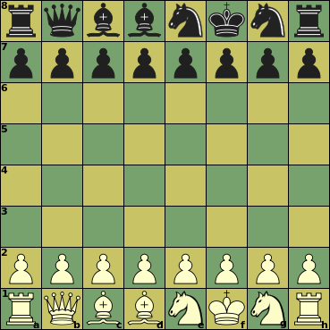

|  |
Initial setupThere is no fixed setup; the back-rank pieces are randomly shuffled with certain restrictions. Black's setup is the mirror image of white's, though. Both sides have: 1 King The Bishops must start on different colors. The King must start between the Rooks. |
| Piece | ID | value | Moves (Betza notation) | Remarks |
| King | K | - | K | Can castle with Rook, moving 3 steps towards it |
| Queen | Q | 9.5 | RB or Q | |
| Rook | R | 5 | R | |
| Bishop | B | 3.5 | B | Color-bound |
| Knight | N | 3 | N | |
| Pawn | P | 1 | mfWcfF | Promotes to Q, R, B, or N on reaching last rank |
A King that has not moved before can move to the c1/c8 or g1/g8 in the direction of a Rook that has not moved before, in which case that Rook is moved to the square on the other side next to the King. This is only allowed if all squares traveled through by King and Rook are empty (after their removal), when the King is not in check on the square it came from, and would not be in check on any of the squares it skipped over.
You can use the New Shuffle dialog to control the randomization of the initial position.
The start position is not fixed, but randomly picked. Castling is generalized to allow it with non-standard placement of King and Rooks.
It is not possible to force checkmate on a bare King with just a single Bishop or Knight (in addition to your own King). Two Knights cannot do that either.
Bishops are confined to squares of a single color. Having Bishops on both colors compensates this weakness, and is worth an extra 0.5 on top of their added value.